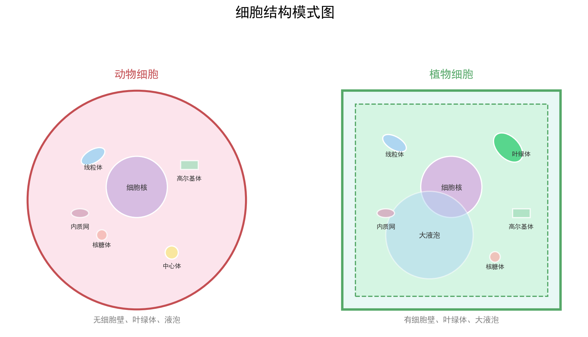

| 字段 | 内容 |
|---|---|
| 来源 | 人教版必修第一册 / 2023-2025广东选择性考试·生物细胞专题 |
| 时间标签 | #高一筑基 |
| 难度 | ★★☆☆☆ |
| 状态 | ⚠️待强化 |
结构：流动镶嵌模型
- 磷脂双分子层（基本骨架）+ 蛋白质（镶嵌/贯穿/覆盖）+ 糖类（糖蛋白/糖脂）
- 结构特点：具有一定的流动性
- 功能特性：选择透过性
功能：
① 将细胞与外界环境分隔开
② 控制物质进出（自由扩散、协助扩散、主动运输、胞吞胞吐）
③ 进行细胞间信息交流（糖蛋白识别、激素受体、胞间连丝、突触）| 细胞器 | 结构 | 功能 | 分布 | 广东考点 |
|---|---|---|---|---|
| 线粒体 | 双层膜，内膜折叠成嵴 | 有氧呼吸主要场所（第二、三阶段） | 真核动植物 | 供能中心，与代谢旺盛程度正相关 |
| 叶绿体 | 双层膜，内有类囊体和基质 | 光合作用场所 | 植物绿色细胞 | 光合色素分布、光反应/暗反应场所 |
| 核糖体 | 无膜，rRNA+蛋白质 | 蛋白质合成场所 | 所有细胞 | 游离型→胞内蛋白；附着型→分泌蛋白 |
| 内质网 | 单层膜，连核膜 | 蛋白质加工、脂质合成 | 真核细胞 | 粗面→分泌蛋白加工；光面→脂质合成 |
| 高尔基体 | 单层膜，扁平囊+小泡 | 蛋白质加工、分类、包装、分泌 | 真核细胞 | 植物→细胞壁形成；动物→分泌物分泌 |
| 溶酶体 | 单层膜，含水解酶 | 分解衰老细胞器、吞噬病原体 | 动物细胞 | 细胞凋亡、细胞自噬 |
| 液泡 | 单层膜，含细胞液 | 储存、维持渗透压、调节pH | 成熟植物细胞 | 质壁分离/复原实验 |
| 中心体 | 无膜，两个中心粒 | 与有丝分裂纺锤体形成有关 | 动物细胞和低等植物 | 前期发出星射线 |

核糖体 → 内质网（加工、折叠） → 高尔基体（加工、分类、包装） → 细胞膜（胞吐释放）
↑ ↑
线粒体供能 线粒体供能
研究方法：同位素标记法（³H标记亮氨酸）
放射性出现顺序：核糖体 → 内质网 → 高尔基体 → 分泌小泡 → 细胞外组成：细胞膜 + 核膜 + 内质网 + 高尔基体 + 线粒体 + 叶绿体 + 溶酶体 + 液泡
功能联系：内质网↔高尔基体↔细胞膜（通过囊泡运输）
意义：①区域化分工，提高效率；②为酶提供附着位点；③使细胞成为一个统一整体| 特征 | 原核细胞 | 真核细胞 |
|---|---|---|
| 核膜 | 无 | 有 |
| 染色体 | 无（有环状DNA） | 有（线性DNA+蛋白质） |
| 细胞器 | 只有核糖体 | 有多种复杂细胞器 |
| 细胞壁 | 多数有（肽聚糖） | 植物有（纤维素），动物无 |
| 代表生物 | 细菌、蓝藻、支原体 | 动植物、真菌 |
| 分裂方式 | 二分裂 | 有丝分裂/减数分裂/无丝分裂 |
| 方式 | 方向 | 是否需载体 | 是否耗能 | 例子 |
|---|---|---|---|---|
| 自由扩散 | 高→低 | 否 | 否 | O₂、CO₂、水、甘油、乙醇、苯 |
| 协助扩散 | 高→低 | 是 | 否 | 红细胞吸收葡萄糖、离子通道 |
| 主动运输 | 低→高 | 是 | 是 | 小肠上皮吸收葡萄糖/氨基酸、离子泵 |
| 胞吞/胞吐 | — | 否 | 是 | 蛋白质分泌、吞噬细胞吞噬 |
判断口诀：顺浓度不耗能是扩散，逆浓度耗能是主动；大分子靠胞吞胞吐。
细胞器口诀：线叶双膜有能量，内高液溶单膜藏；核糖中心无膜包，分工合作膜系统。分泌蛋白路径：核糖内质高尔基，线粒供能膜外去。
原核真核速判：有核真核，无核原核；原核只有核糖体，真核分工多样化。
广东情境提示：广东卷细胞题常以广东本地生物为情境（如荔枝/龙眼细胞结构、红树林耐盐机制、南海珊瑚共生体系），注意从情境中提取细胞类型和结构功能信息。